训练你自己的 LoRA
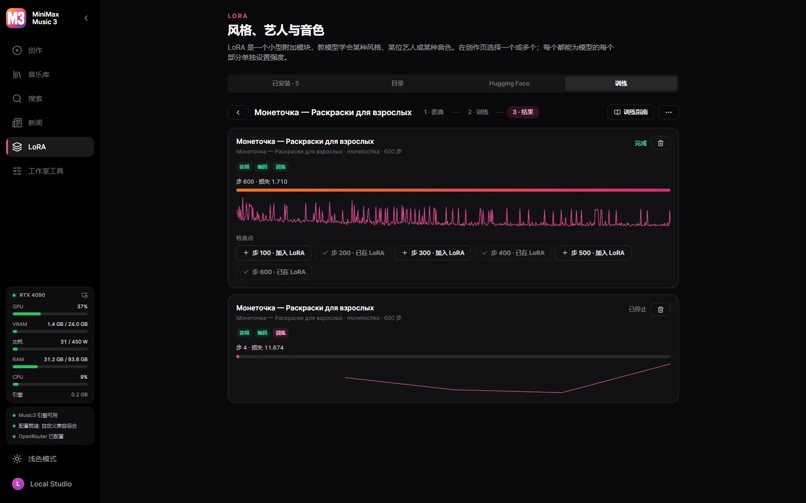
用同一歌手或风格的歌曲，在你的显卡上以 HOT-Step 的训练器和配方训练 LoRA。
面向 MiniMax Music3 的 Windows 桌面工作室。
需要 Windows 10/11 x64 与 NVIDIA 显卡（GTX 900 系列及更新）。模型在工作室内按你的指令下载——程序不会自行下载任何东西。
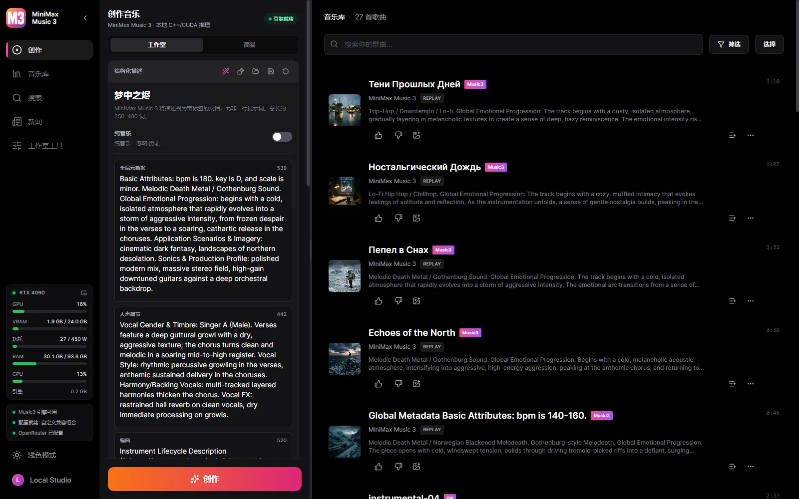

用同一歌手或风格的歌曲，在你的显卡上以 HOT-Step 的训练器和配方训练 LoRA。
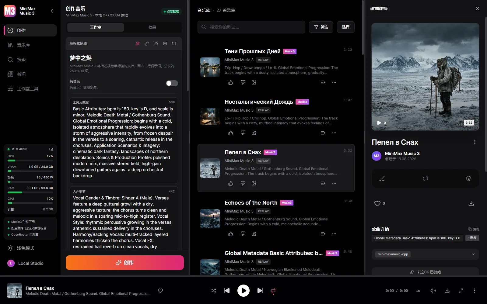
带逐词时间戳的增强 LRC，由 Parakeet、Whisper 或云端模型对齐——歌词是你的，只借用时间轴。
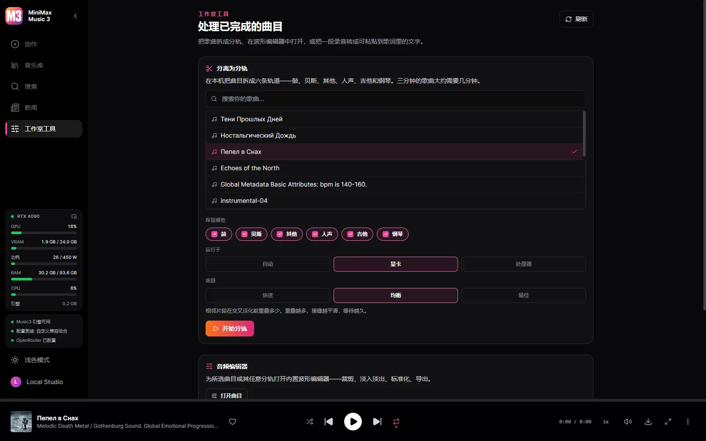
六条音轨——鼓、贝斯、其他、人声、吉他、钢琴——由 HT-Demucs 在显卡上分离，也可以改用处理器。
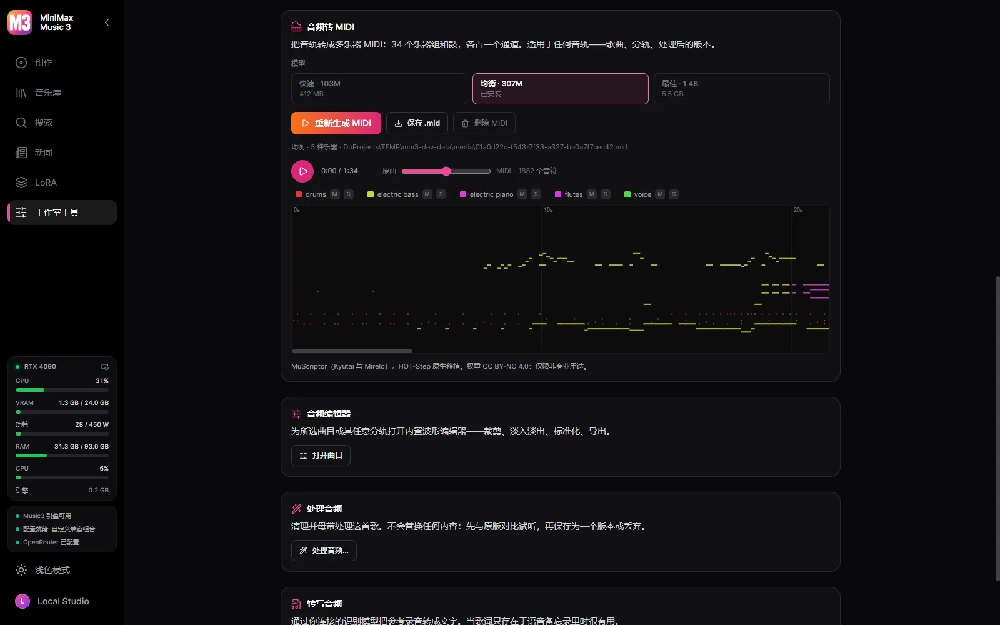
歌曲、分轨或处理后的版本都能在你的显卡上由 MuScriptor 转为多乐器 MIDI——34 个乐器组加鼓。

基于 Winamp 频率的十段均衡器，含其预设和 .EQF 文件；带数百个预设的 MilkDrop，或十种样式的频谱；还有 Winamp 模式，各窗口可分离、吸附和调整大小，使用原版皮肤或 Winamp 皮肤博物馆中的任意皮肤。
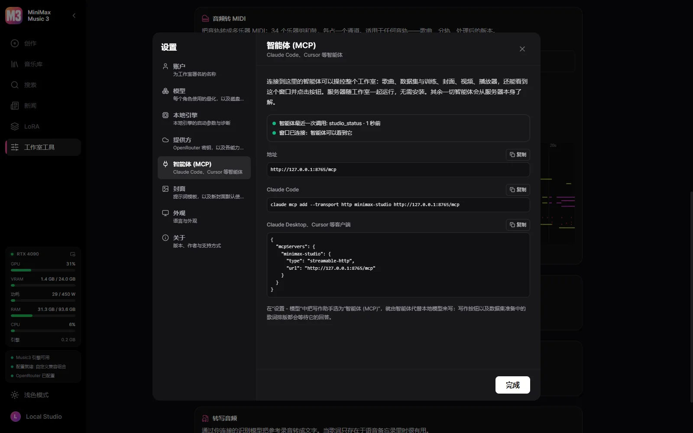
连接 Claude Code、Claude Desktop 或 Cursor，智能体就能做工作室能做的一切：写歌并生成、整理数据集并训练、绘制封面、在视频编辑器里剪辑 MV、播放歌曲——还能看到窗口并点击按钮。
工作室本身，使用你的语言。
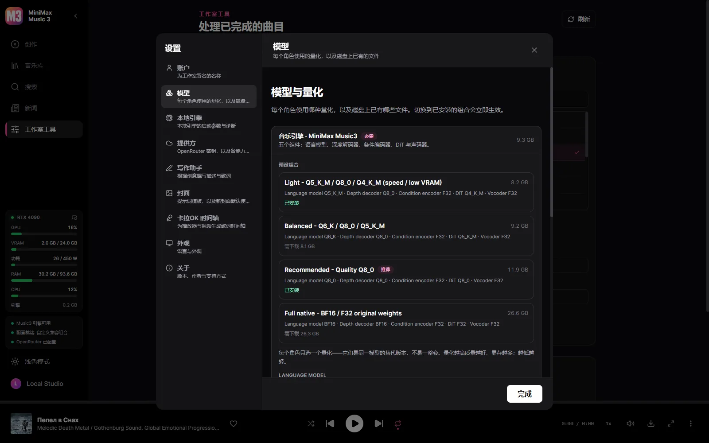
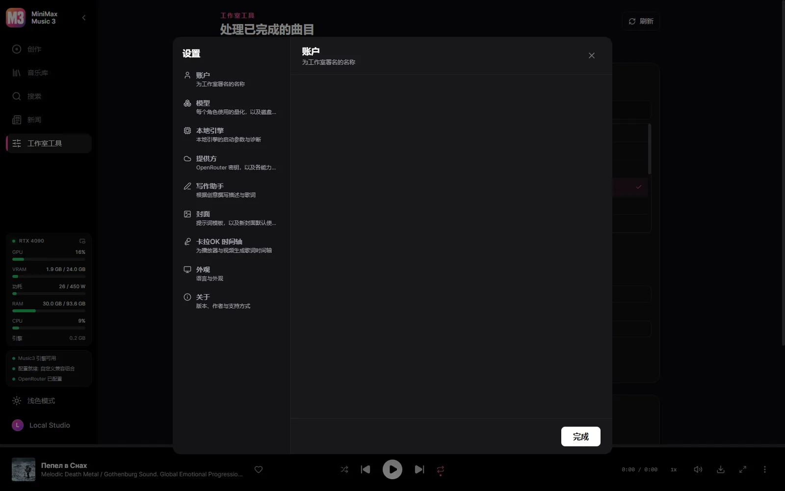
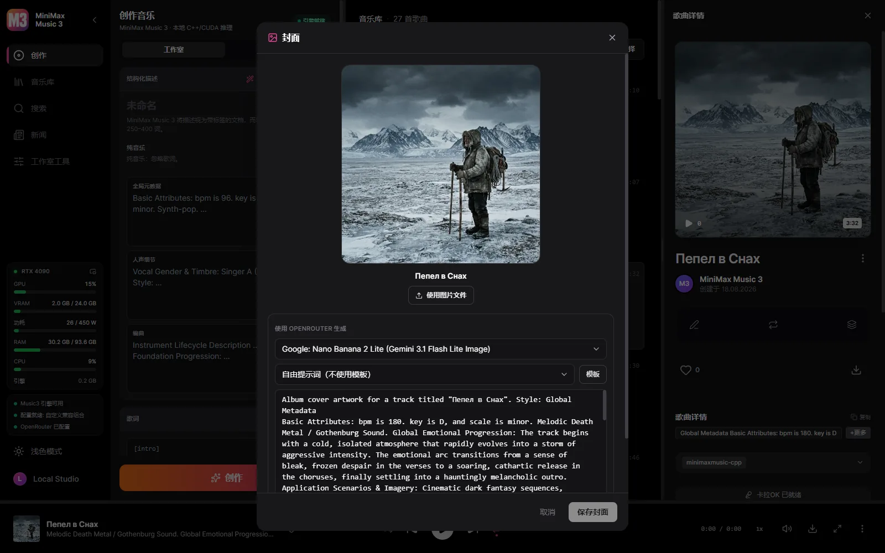
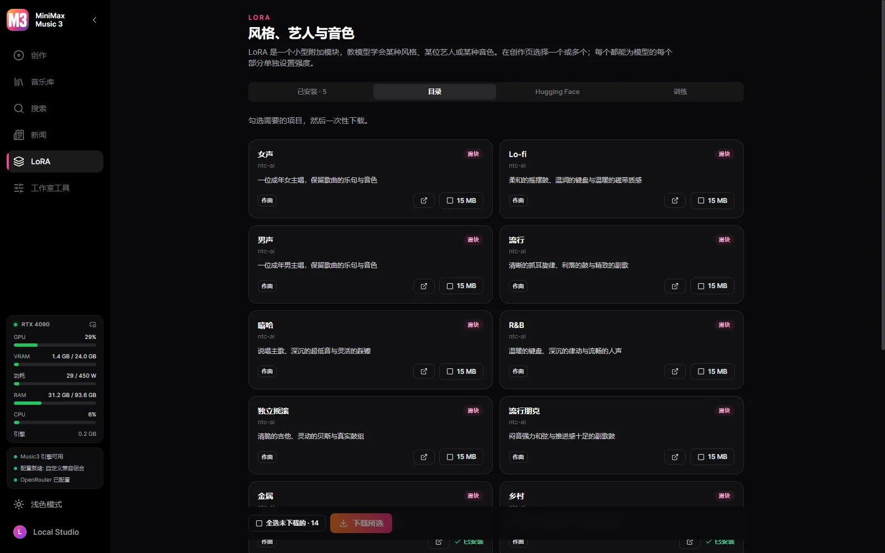
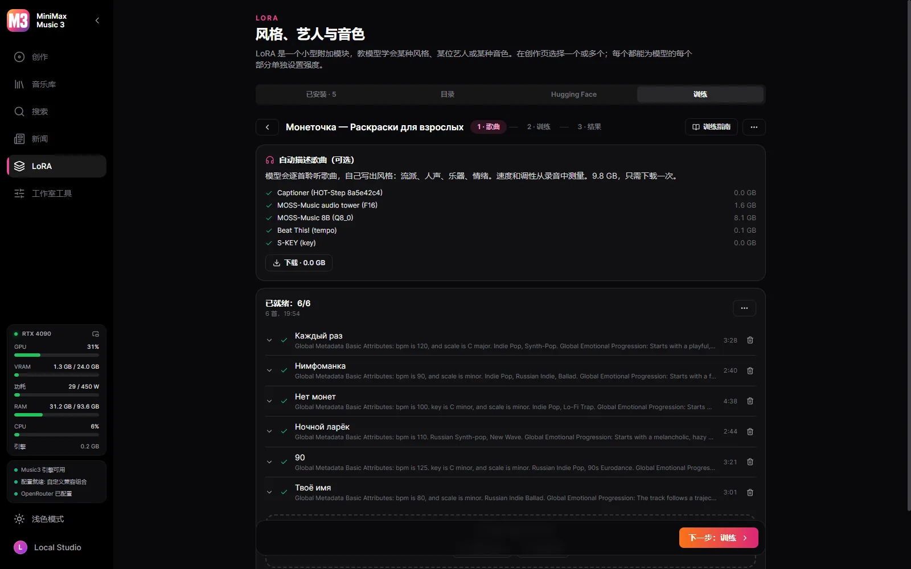
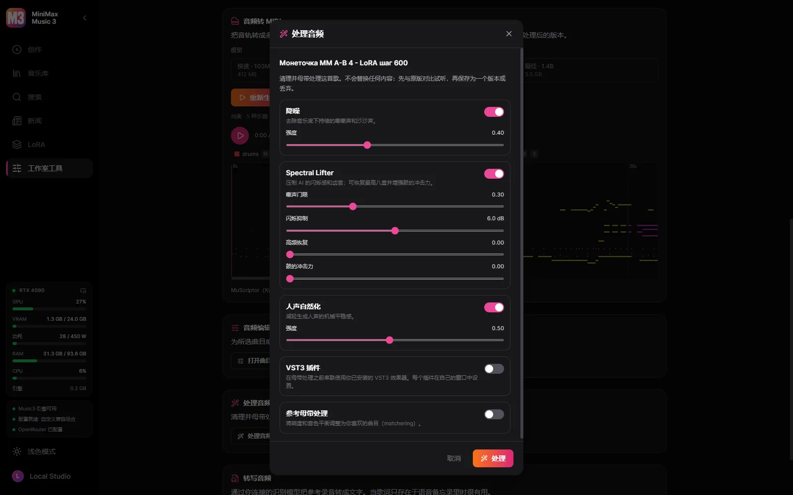
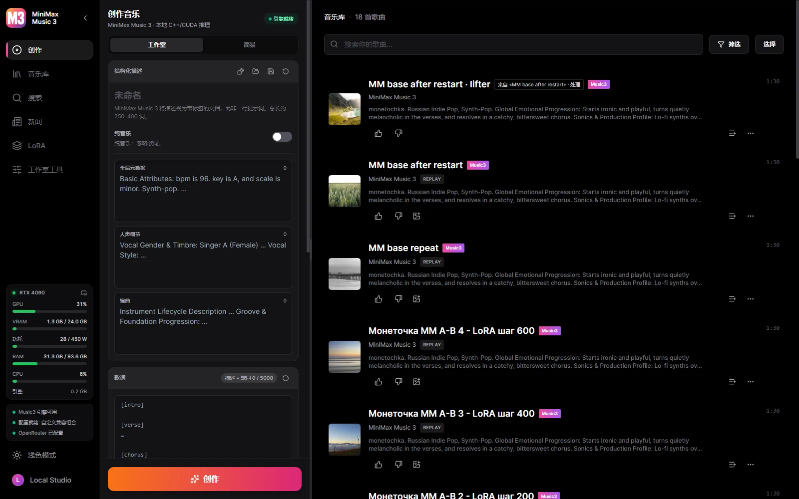
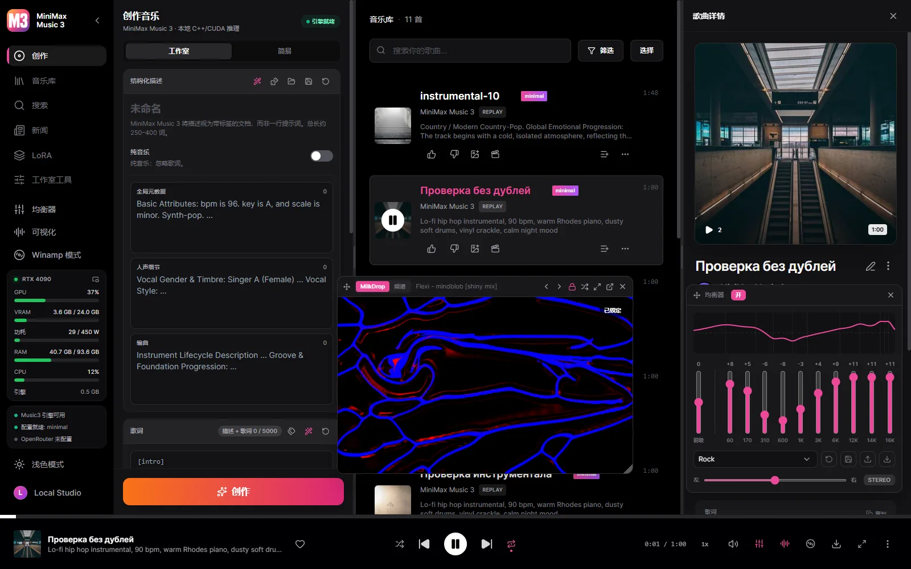
需要 Windows 10/11 x64 与 NVIDIA 显卡（GTX 900 系列及更新）。模型在工作室内按你的指令下载——程序不会自行下载任何东西。
可运行的 Music3 安装始终由五个组件构成：语言模型、RVQ 深度解码器、条件编码器、DiT 与声码器。
| 显卡 | 配置 | 下载量 |
|---|---|---|
| 30 GB+ | Full Native — BF16 / BF16 / F32 | 28.6 GB |
| 15 GB+ | Q8 Quality | 12.8 GB |
| 11.5 GB+ | Balanced — Q6 / Q8 / Q5 | 9.8 GB |
| 9.5 GB+ | Light — 追求速度与低显存 | 7.7 GB |
| 8 GB | Minimal — Q3，用于 8 GB 显卡 | 6.5 GB |
工作室会识别你的显卡并预选它真正跑得动的配置，但是否下载始终由你决定。每个文件都按固定的 Hugging Face 版本校验哈希，中断的下载会从断点继续。
是的。工作室免费且开源，模型也可以在其中免费下载。
一句话：你的音乐属于你，并留在你的磁盘上。
本工作室开源。MiniMax Music3 权重遵循其自身的社区许可：商业使用必须标明 MiniMax-Music3 名称并落实该许可要求的安全措施。
用同一歌手或风格的歌曲，在你的显卡上以 HOT-Step 的训练器和配方训练 LoRA。每项设置都可修改，数据集可在本工作室与 YuE2 Studio 之间迁移。
连接 Claude Code、Claude Desktop 或 Cursor，智能体就能做工作室能做的一切：写歌并生成、整理数据集并训练、绘制封面、在视频编辑器里剪辑 MV、播放歌曲——还能看到窗口并点击按钮。MiniMax 官方的描述规则随之提供，描述和歌词由智能体自己来写。把它选为写作助手，就由它代替本地模型写词。
默认全部在本地。云端密钥由你自己添加，只用于你指定的能力，也可以随时移除。
| 组成部分 | 运行位置 | 大小 |
|---|---|---|
| MiniMax Music3 引擎（minimaxmusic.cpp） | 你的显卡，CUDA | 已内置 |
| Music3 模型组合 — 五个组件 | 你的显卡 | 6.5–28.6 GB |
| 卡拉OK 时间轴 — Parakeet 或 Whisper | 你的电脑 | 可选下载 |
| 音轨分离 — HT-Demucs，六条音轨 | 显卡或处理器 | 136 MB |
| 写作助手 | 本地 GGUF 或 OpenRouter | 由你选择 |
| 封面图 | OpenRouter 图像模型 | 仅云端 |
| 视频导出 — ffmpeg | 你的电脑 | 已内置 |
| LoRA 训练 — HOT-Step ace-train | NVIDIA RTX 30 或更新，22 GB 显存 | 10.5 GB，可选 |
| 按听觉描述歌曲 — MOSS-Music-8B | 约 12 GB 显存 | 10 GB，可选 |
| VST3 宿主 — HOT-Step | 你的电脑，独立进程 | 内置 |
| 音频转 MIDI — MuScriptor（HOT-Step ace-midi） | NVIDIA GTX 16 / RTX 20 或更新 | 0.5–5.6 GB，可选 |
服务被编译进桌面程序并托管 C++ 引擎。应用关闭时，它启动的一切都会随之退出。
React UI ─┐
├─ MiniMax Music3 Studio.exe (window + native service)
Rust axum ┘ │
└─ minimaxmusic.cpp `mm-server` (C++/CUDA, GGUF)